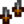

Wicked Kris
Jump to navigation
Jump to search
| Wicked Kris | |
| The blade is made of an iridium alloy. | |
| Information | |
| Type: | Dagger |
| Level: | 8 |
| Source: |
|
| Damage: | 24-30 |
| Critical Strike Chance: | .06 |
| Stats: |  Crit. Chance (+4) |
| Adventurer's Guild | |
| Purchase Price: | Not Sold |
| Sell Price: | |
The Wicked Kris is a dagger weapon that can be obtained as a special item drop in the Skull Cavern[1] or Quarry Mine by killing special monsters or by breaking crates and barrels. It is a possible reward for the chest on floor 90 of the Mines if "remixed" mine rewards are selected in the Advanced Options menu when starting a new game.
History
- 1.5: Level lowered from 15 to 8 and sell price lowered from
 750g to 400g.
750g to 400g.
References
- ↑ See MineShaft::getSpecialItemForThisMineLevel in the game code.